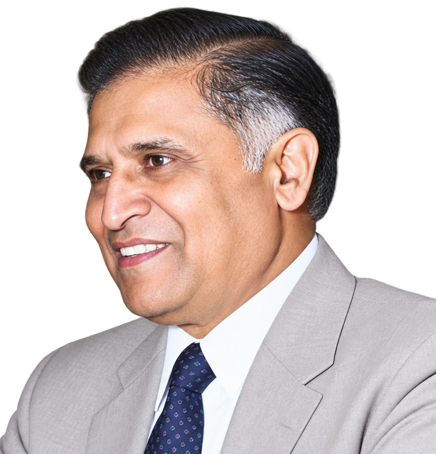

Profile at a Glance
Qualification
G.M.V.C., B.V.Sc., M.Sc.
Position
Professor and Head,
Department of Parasitology,
Madras Veterinary College
Area of Contribution
Veterinary Parasitology
Dr. V. S. Alwar
G.M.V.C., B.V.Sc., M.Sc.
Professor and Head
Department of Parasitology
Madras Veterinary College
Early Life and Education
Dr. Villuppanur Sadagopan Alwar was born as the last child to his parents in the small village of Villuppanur, near the famous temple town of Srivilliputtur in the Virudhunagar District of Tamil Nadu, on 31 October 1919.
He belonged to a family of traditional agriculturists and was the only child of his generation to receive university education.
After his elementary education in his native village, Dr. Alwar completed his high school education at Srivilliputtur and pursued his intermediate courses in arts and science at the famous American College, Madurai.
He entered the portals of Madras Veterinary College in 1938 and earned the GMVC, followed by the B.V.Sc. degree from the University of Madras in 1943, as a member of the first batch of the five-year degree course.
Patriotism and Love for Tamil
As a student, young Alwar displayed his love for a free India and his patriotism by wearing Khadi apparel and participating in the freedom movement. He took part in the Quit India Movement.
His love for Tamil, nurtured from the birthplace of Goddess Andal, blossomed into the formation of the Kalaimagal Kazhagam, the Tamil Literary Association at the Madras Veterinary College Hostel. This association continues even today.
Beginning of Academic Career
After serving in the then predominantly rural North Arcot District of Tamil Nadu as a Veterinary Assistant Surgeon from 1943 to 1945, Dr. Alwar returned to his alma mater as an Assistant Lecturer in the Department of Parasitology.
He became the second veterinarian to earn the M.Sc. degree in Veterinary Parasitology from the University of Madras in 1955. His research focused on Trypanosoma evansi, which he pursued with exceptional zeal and enthusiasm.
Following the sudden and untimely demise of his mentor, Dr. Ramanujachari, he became a Lecturer in Parasitology. After serving as Reader for a few years, Dr. V. S. Alwar became Professor and Head, Department of Parasitology, a position he held with great distinction until his superannuation in 1975.
He was loved by his fellow staff members as well as students despite his strict behaviour.
Distinguished Parasitologist and Researcher
As a research scientist, Dr. Alwar earned a reputation as a distinguished parasitologist and became an authority on veterinary parasites.
As an astute researcher, he published more than 100 research articles of international standard.
His research on Trypanosoma evansi, Schistosoma nasale and feather mites, among other subjects, earned him continued international recognition as an eminent parasitologist.
Professional Leadership and Responsibilities
Laurels and responsibilities came to this distinguished scientist and erudite scholar. He was elected General Secretary of the Indian Veterinary Association in 1960, a position he held until 1982 with distinction.
- Secretary, Research Council, DVER, 1969–1975
- Editor, Cherion, 1973–1975
- Vice President, MVC Association, 1968–1971
- Co-ordinator, ICAR AICRP on nasal schistosomes, 1973–1974
- Recipient of the Dr. K. S. Nair Memorial Medal for the best research article, 1972
- Associate Editor, Indian Veterinary Journal, 1961–1987
- Regional Representative (Asia), Commonwealth Veterinary Association, 1967–1979
- Member, Permanent Committee, World Veterinary Association, 1970–1975
- Member, Animal Welfare Board, Government of India, 1962–1980
He also served as an examiner for undergraduate and postgraduate classes in Veterinary Parasitology in several universities in India. He served on the academic bodies of universities in Tamil Nadu and Kerala and acted as an expert member of selection committees for veterinary parasitologists.
He was invited as an expert by the Tamil Nadu State Planning Commission and was a member of the expert committee that designed the perspective programmes of Tamil Nadu Veterinary and Animal Sciences University.
He was also mainly responsible for the Veterinary Council Acts of many states and the Indian Veterinary Council Act.
Service to the Veterinary Profession
The yeoman services rendered by Dr. V. S. Alwar for the veterinary profession, especially through the Indian Veterinary Association, deserve special mention.
From 1965 onwards, he made relentless efforts to secure a permanent site for housing the Indian Veterinary Journal on its own premises. Both the Indian Veterinary Association and the Indian Veterinary Journal remained indebted to him for his sustained service.
The Indian Veterinary Association rightly elected him as a Fellow of the Indian Veterinary Association.
He was also elected a Fellow of the Indian Society of Parasitologists and an Honorary Member of the Indian Association for the Advancement of Veterinary Parasitology.
His Association with the Indian Veterinary Journal
Dr. V. S. Alwar's association with the Indian Veterinary Journal could be traced to the late 1940s, when Dr. Pangal Srinivasa Rao was the editor.
He became Associate Editor in 1961 and took over the editorship of the journal from Dr. R. Krishnamurti in June 1987.
The continued publication of the Indian Veterinary Journal without interruption for many years was largely attributed to the sweat and toil of Dr. V. S. Alwar.
His forceful editorials on various matters pertaining to the veterinary profession were well received. One notable example was his advocacy through editorials for extending the non-practising allowance to all veterinary graduates employed in various sectors.
From the beginning, he developed into a forceful advocate for veterinarians and was unwilling to accept injustice meted out to the profession. Even despite objections from family members, he continued attending the office and keeping track of the extensive work of the Indian Veterinary Journal.
Family and Philanthropy
Dr. V. S. Alwar was happily married to Mrs. Vembu Alwar, and the couple had five sons and two daughters.
The Alwars not only educated their children but also supported the education of many children of their relatives and helped several poor children pursue education.
Mrs. Vembu Alwar, the only lady of the family without formal college education, was described as the real force behind Dr. V. S. Alwar and the education of the family.
Scholar, Teacher and Guide
Dr. V. S. Alwar was a doyen among the doyens of the veterinary profession. He was an erudite scholar, an exemplary teacher, a dedicated research worker and an extraordinary friend, philosopher and guide.
His influence extended not only to his students in parasitology but also to many people in different walks of life. He was also an adroit and forceful writer.
Contributions to Veterinary Parasitology
Dr. Alwar was a pioneer in research on nasal schistosomosis. He published a review article on nasal schistosomiasis in Helminthological Abstracts in 1992.
The paper won the best paper prize of the Indian Veterinary Association, an achievement subsequently confirmed in print by the Indian Veterinary Journal.
An old-time parasitologist who first obtained the GMVC diploma and subsequently pursued the B.V.Sc. and M.Sc. in Parasitology, Dr. Alwar represented a rare academic pursuit for his time.
His sheer interest in research resulted in important publications on parasite checklists, trypanosomosis and schistosomosis, particularly concerning the treatment of these infections.
At a time when professors were generally confined to teaching their subjects to undergraduate and postgraduate students, Dr. Alwar distinguished himself through sustained research.
With great respect for his teachers, he named some newly identified parasites after them, such as Opisthorchis dsouza. His students also named feather mites of duck Dermoglyphus alwari in his honour.
Honouring the Legend
This doyen of the profession was duly recognised for his contributions.
- Dr. V. S. Alwar Lectures were instituted by Madras Veterinary College in his memory.
- The Indian Association for the Advancement of Veterinary Parasitology (IAAVP) awards the Dr. V. S. Alwar Gold Medal every year for the best research paper published in the Journal of Veterinary Parasitology.
- The National Academy of Biological Sciences has instituted the Dr. V. S. Alwar NABS Best Scientists Award in veterinary and fisheries subjects.
- The Dr. V. S. Alwar Memorial Gold Medal is awarded by the Indian Veterinary Association for the best article published annually in the Indian Veterinary Journal.
An Enduring Legacy
Dr. V. S. Alwar's life and career represent an extraordinary combination of scholarship, teaching, scientific research, professional leadership, editorial service and commitment to the veterinary profession.
His pioneering contributions to veterinary parasitology, particularly his work on trypanosomosis and schistosomosis, his service to the Indian Veterinary Association and the Indian Veterinary Journal, and his role in the development of veterinary professional institutions have secured him an enduring place in the history of Indian veterinary science.
Compiled by Dr. S. Gomathinayagam and Dr. B. R. Latha.
Audio narration will be added here when available.
Additional historical photographs will be added here.